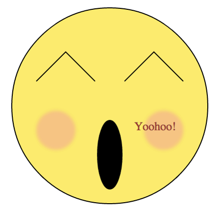

Sequence 1 - Graphics API - Canvas
Rules
Reproduce this image 
Notes: Canvas can’t draw an ellipse as easily as SVG can. You’ll need to use two curves instead
Filters are way more hard to do in canvas, so drop the cheekbones!
Correction